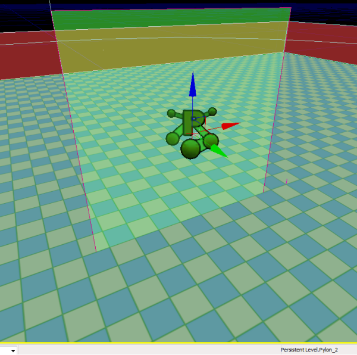
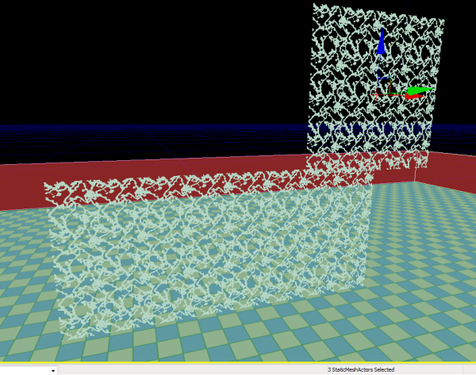
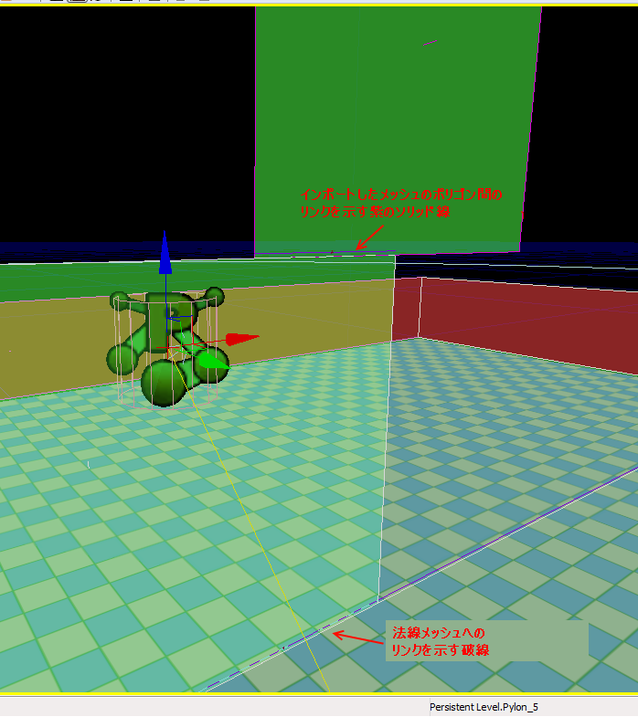

UDN
Search public documentation:
NavMeshManualCreationJP
中国翻译
한국어
Interested in the Unreal Engine?
Visit the Unreal Technology site.
Looking for jobs and company info?
Check out the Epic games site.
Questions about support via UDN?
Contact the UDN Staff
한국어
Interested in the Unreal Engine?
Visit the Unreal Technology site.
Looking for jobs and company info?
Check out the Epic games site.
Questions about support via UDN?
Contact the UDN Staff
ナビゲーションメッシュの手動作成
ドキュメントの概要: ナビゲーションメッシュの一部を手動で作成する手順の概要と、作成に適した状況の説明。 ドキュメントの変更ログ: Matt Tonks により作成および更新。概要
状況によっては、メッシュの一部を自動生成以外の方法で作成した方が都合がよいことがあります。このドキュメントでは、その手段のひとつとして、前から存在するメッシュを選択し、それをナビゲーションメッシュに変換するという方法を説明します。そのために、1 つまたは複数の静的メッシュを、特殊な「imported (取り込み型)」パイロンに変換します。 これらの「取り込み型」パイロンは、メッシュの自動生成プロセスの影響を受けず、メッシュが自動生成されてから残りのメッシュとリンクされます。このリンク方法には、直接エッジを追加するか (取り込まれるメッシュが同一面上に近い場合)、または取り込まれるメッシュと生成されたメッシュの間の境界に沿って、生成されたメッシュを細分割するかのいずれかです (後者については後ほど説明します)。 現在のところ、メッシュを手動で作成する方法は 1 つだけで、それは 1 つまたは複数の静的メッシュを特別な「取り込み型」パイロンに変換するというものです。1 つまたは複数の静的メッシュを選択し、右クリックして [Convert Staticmesh to Navmesh] (静的メッシュをナビゲーションメッシュに変換) を選択すると、静的メッシュの頂点データがコードに直接渡され、ナビゲーションメッシュのデータ構造に変換されます。 複数の静的メッシュを選択した場合は、メッシュが一続きになるようにスナップ/配置され、可能な場合には 1 つにつないで (contiguous) (例えばひと続きの境界になるように)、次にその結果を 1 つのナビゲーションメッシュに入れて「取り込み型」パイロンに変換します。一度に複数のメッシュを取り込めるこの機能を利用すれば、ナビゲーションメッシュを自動生成以外の手段で生成しなければならない特別な状況で、手動でメッシュをひとまとめにすることができます。静的メッシュからナビゲーションメッシュへの変換
静的メッシュをナビゲーションメッシュに変換するのは簡単で、右クリックして [Convert Staticmesh to Navmesh] を選択するだけです。
静的メッシュのジオメトリはほとんどその形のまま使用され、背面などもそのまま含まれるので注意してください。次の図は平面と 2 つの三角形からなるメッシュの例です。

ナビゲーションメッシュへの変換後は、メッシュがきれいなグリーンとレッドのナビゲーションメッシュに描画されているのが分かります。 不要なポリゴンがひとつに結合されているのも分かります。 さらに、この取り込み型メッシュは、まだ残りの (自動作成による) ナビゲーションメッシュにリンクされていない点にも注意してください。

新しいナビゲーションメッシュを追加した後でパスをビルドすると、取り込み型メッシュの境界に沿って自動生成メッシュが細分割されます。これは次の図に示されています。

下側の境界に沿ったパープルの点線を見てください。これは取り込み型ポリゴンと自動生成のベースポリゴンの間のリンクを示しています。
複数の静的メッシュを 1 つの取り込み型パイロンに変換
複数の静的メッシュを 1 つのパイロンに変換することもできます。これは、ベース形状の中から手動作成のメッシュを選択してひとつにまとめる場合や、非常に単純な複数の静的メッシュ形状 (四角形や円弧など) の中から任意の構造を組み立て、スケーリングや編成によって大きな形状を作る場合に特に便利です。 これを行うには、静的メッシュを一続きに並べてすべてを選択し、[convert to navmesh] をクリックするだけです。この操作には、隣接する静的メッシュに対する許容値 (tolerance) が組み込まれています。つまり、一続きの形状を形成するために、隣接するメッシュをひとつにはめ合わせるための許容範囲です。 以下の図では、単純な四角形を 1 つにまとめます。
変換後の図です。

最後に、パスが形成された後の図です。

ここでも、メッシュをリンクするパープルの点線と、取り込み型ポリゴンを 1 つにつなぐパープルの実線があるのがわかります。取り込み型メッシュを作成する場合には特にこれらの線に注意して、メッシュ間とメッシュポリゴン間に適切なリンクが存在することを確認してください。